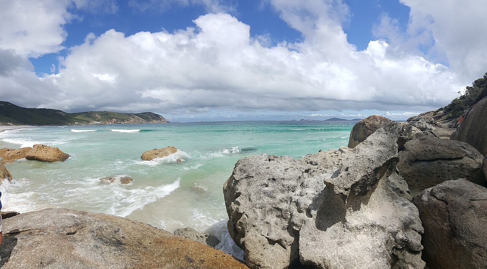

Wilsons Promontory from Melbourne · 5-day family itinerary
About three hours’ drive from Melbourne, then four nights in a Tidal River cabin. Short walks from the footbridge to Squeaky Beach and Pillar Point, a pram-friendly gully walk, one summit day on Mount Oberon, and two rules for a nine-year-old and a six-year-old: no swimming on unpatrolled beaches, and the fire danger rating decides whether the trip starts.

Photo: FemmeVulpes, Squeaky Beach, Wilsons Promontory National Park, CC BY-SA 4.0, via Wikimedia Commons.

Checked before you commit
This illustrative route drives from Melbourne to Wilsons Promontory National Park and stays four nights in a Tidal River cabin. Parks Victoria pages, the park visitor guide and accommodation guide, the Victorian Government’s fire danger rating page and the Bureau of Meteorology’s fire weather page were read on 2 November 2026. Nothing was booked.
One drive in, one drive out, and one base. Every walk on Days 1, 2 and 4 starts at Tidal River or a short drive from it. Mount Oberon sits on a weekday, because Parks Victoria says the Telegraph Saddle carpark closes on weekends from November to April. Day 4 is kept loose so the summit can move.
Walks of 1 km to 5.2 km on most days, and one 6.8 km summit walk graded moderate/hard. Each day has a morning and an afternoon slot. The children are nine and six, so beach time is paddling within arm’s reach, not swimming.
We didn’t check cabin rates or availability. Parks Victoria says camping and accommodation must be booked in advance, and that if you arrive after hours without a reservation you can’t book or stay. A booking-hub link is intent only. It doesn’t hold a cabin.
Planning boundary: dates are illustrative; the worked example runs Sunday 22 to Thursday 26 November 2026, after the 20 November end date Parks Victoria gives for traffic management on the entrance road. Parks Victoria says those dates may change.
Parks Victoria says Wilsons Promontory is in the West and South Gippsland fire district, that the park closes on days forecast Catastrophic, and that its beaches are generally not patrolled. Alfred doesn’t check fire danger ratings, park closures or walk conditions. Book opens a partner checkout; it doesn’t prove a booking.
Route and family-coordination brief
Party: two adults, one nine-year-old and one six-year-old, living in Melbourne. Base: four nights in a Tidal River Cabin. Pace: moderate, a morning and an afternoon slot. Budget input: Mid Range.
Getting there: Parks Victoria says the park is about three hours’ drive from Melbourne, via the Monash Freeway (M1), the South Gippsland Freeway (M420/A440) to Meeniyan and the Meeniyan-Promontory Road (C444) to the entrance. Tidal River is a further 30 minutes, about 30 km. There is no fuel or EV charging at Tidal River; Parks Victoria names Yanakie, Fish Creek and Foster for fuel. Entry is free.
Fire rule: the Victorian Government says fire danger ratings are forecast up to four days in advance and updated daily. Parks Victoria says the park closes on days forecast Catastrophic and visitors at Tidal River should leave the night before or as early as possible. On days of Total Fire Ban, liquid-fuel and gas camp stoves aren’t allowed, though built-in gas cookers in built accommodation may be used. Fires, including solid-fuel barbecues, aren’t allowed at any time.
Water rule: Parks Victoria says many Prom beaches have strong undertows, rips and a steep floor, that beaches are generally not patrolled by Surf Life Saving, and never to swim alone. At Squeaky Beach it says swimming is not recommended because of persistent rips. In this plan, beaches are for paddling and rock pools, with one adult per child.
Left out: Sealers Cove, which Parks Victoria lists as closed due to storm damage until further notice, and the Big Drift walk, whose car park is closed for Prom Sanctuary works. Overnight hikes are left out for this age group. Pets, drones and generators aren’t allowed in the park.
Day 1 — Drive to the Prom, cabin check-in, the Loo-Errn boardwalk
The night before, check the fire danger rating for the West and South Gippsland district. If Sunday is forecast Catastrophic, don’t go: Parks Victoria says the park is closed on those days. If it is Extreme, Parks Victoria says to reconsider plans to visit parks.
Drive from Melbourne via the M1, the South Gippsland Freeway and Meeniyan to the park entrance, about three hours, then 30 minutes more to Tidal River. Fill up at Yanakie, Fish Creek or Foster on the way; there is no fuel or EV charging at Tidal River. Parks Victoria asks drivers to look out for wildlife and avoid driving between dusk and dawn.
Check in to a Tidal River Cabin. Parks Victoria says the cabins sleep up to six, with a queen bed in one room and two bunk beds in the other, linen and towels, a full kitchen with a gas stove, and gas heating. If you arrive after hours with a booking, your name or booking number is on a board at the entrance to the Visitor Centre, and the keys are left in the door.
In the afternoon, walk the Loo-Errn Track along the south bank of the Tidal River estuary to the footbridge: 1 km, about 30 minutes one way, on a boardwalk. Norman Beach is a few minutes’ walk from the campground.
Fallback: if the entrance road is slow, Parks Victoria lists traffic management there until 20 November and says the dates may change. Leave Melbourne early enough to arrive in daylight.
Live-check: the fire danger rating; Parks Victoria’s change of conditions for Wilsons Promontory; your cabin booking.
Day 2 — Squeaky Beach on foot, rock pools at Picnic Bay
Walk to Squeaky Beach from Tidal River. Parks Victoria lists the Squeaky Beach walk at 4.2 km, about 1.5 hours return, and says the rounded grains of quartz sand squeak when walked on. If little legs are tired, the beach is 300 m from the Squeaky Beach carpark, but Parks Victoria says that carpark fills.
Parks Victoria says swimming at Squeaky Beach is not recommended because of persistent rips, and that it is a popular surfing spot. Paddle at the water’s edge only, one adult per child. Hooded Plovers nest on the park’s beaches between August and April, so walk close to the water.
Drive the short way to Picnic Bay. The visitor guide says the bay is 400 m from its carpark and has intertidal rock pools to the north. Look, then put things back; Parks Victoria says animals and natural features are protected and must not be disturbed or removed.
Fallback: the Squeaky Beach walk and others start at the Tidal River footbridge. If the footbridge is closed, drive to the Squeaky Beach carpark instead.
Live-check: the change of conditions for the footbridge and Squeaky Beach; marine weather and tides before the rock pools.
Day 3 — Mount Oberon summit on a weekday
Drive to Telegraph Saddle carpark. Parks Victoria says it closes during summer school holidays, Easter and on weekends from November to April, and that a free shuttle bus then runs from Tidal River, with the timetable posted at the stops and the Visitor Centre.
Walk to the Mount Oberon summit: 6.8 km, about 2 hours return, graded moderate/hard on the day walks page and Grade 4 in the visitor guide. Parks Victoria warns of unprotected cliffs at the top. For a six-year-old this is the hardest walk of the trip; turning back is part of the plan.
Pack water, a hat, sunscreen and a waterproof jacket, which the visitor guide lists for walkers. Parks Victoria says the summit can be windy and cool.
Back at Tidal River, rest at the cabin. Parks Victoria says the General Store reopened on 7 May 2026 and sells bread, milk, ice, gas and takeaway, with hours that vary.
Fallback: if it is wet, windy or the fire danger is high, swap Day 3 and Day 4 in Hey Alfred and do the Lilly Pilly Gully walk instead.
Live-check: the weather and fire danger rating for Day 3; whether the shuttle is running.
Day 4 — Lilly Pilly Gully and Pillar Point
Walk the Lilly Pilly Gully Nature Walk from the Lilly Pilly carpark: 5.2 km, about 1.5 hours return. Parks Victoria says it suits families with children and people with limited mobility, and is relatively flat with a boardwalk through rainforest. The Lilly Pilly Link Track joins it to Tidal River, 1 km and about 20 minutes each way.
Walk out to Pillar Point from the Tidal River footbridge: 3.6 km, about 1.5 hours return, Grade 3, to a granite outcrop with views of Norman and Squeaky beaches. The visitor guide warns of unprotected cliffs, so hold hands at the top.
If you skipped the summit on Day 3, do it this morning and move Lilly Pilly Gully to the afternoon.
Live-check: the footbridge; the fire danger rating for Day 5, the drive home.
Day 5 — Prom Wildlife Walk and the drive home
Check out of the cabin. On the way out, stop for the Prom Wildlife Walk in the north of the park: 2.3 km, about 45 minutes return, Grade 2.2, across open grassland where the visitor guide says you may see kangaroos, wallabies, emus and wombats. Parks Victoria says it is an offence to feed wildlife.
Drive back to Melbourne. Parks Victoria gives about three hours from Melbourne to the park, plus 30 minutes between the entrance and Tidal River. Refuel at Yanakie, Fish Creek or Foster.
Fallback: if Day 5 is forecast Catastrophic, Parks Victoria says to leave the night before or as early as possible in the morning. It also asks drivers to avoid dusk and dawn, so leave on Day 4 in daylight and skip the wildlife walk.
Live-check: the fire danger rating; road conditions at the entrance.
Planning notes
Dates are illustrative. At decision time, recheck the fire danger rating for West and South Gippsland, Parks Victoria’s change of conditions for Wilsons Promontory, the entrance roadworks, the Tidal River Visitor Centre’s hours and your cabin booking. A travelling profile is required, and the adults, children and ages Alfred plans for come from the travellers on that profile.
On web Lets Go, Holiday takes origin, destination, dates, a budget step and a day pace, then Plan my trip queues the itinerary. Moderate day pace fills a morning and an afternoon slot, with lunch and dinner. The Estimated costs bar, when it appears, is a rounded median of flight-and-hotel packages, so it isn’t a useful number for a family driving from Melbourne.
While the trip is still Planning, you can keep or change the hotel and then the flights Alfred picked. Tidal River cabins are booked through Parks Victoria. We did not test whether city search offers Wilsons Promontory or Tidal River, or whether Alfred’s hotel choices include a Parks Victoria cabin.
Once the trip is ACTIVE, you can edit an item’s title, times and notes, so “Mount Oberon; carry water and a jacket; turn back if the six-year-old is done; check the fire rating tonight” can sit on the card. In Hey Alfred you can ask to swap two full days, and you confirm before it is applied. Book opens a partner checkout. It doesn’t check fire ratings or park closures.
Plan a trip
Start with your people, dates and pace, then review the editable plan before booking.
Plan a trip